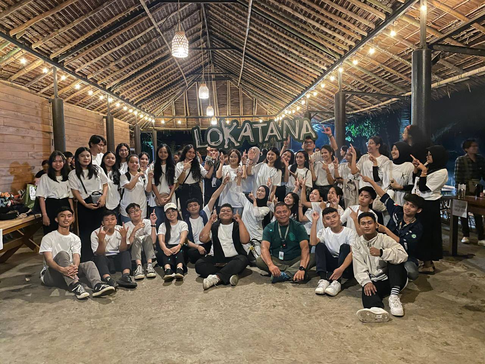
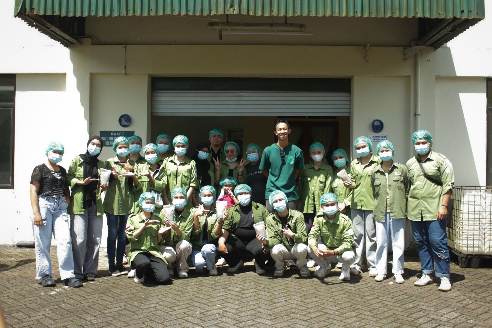

Website panduan menanam vertikal. Saya berperan sebagai UI Designer dalam tim program MSIB Studi Independen 2024.
Mockup VertigrowLetakkan gambar layar utama & alur aplikasi di sini (assets/mockup-vertigrow.png)
Riset
Memahami kebutuhan calon pengguna.
Alur pengguna
Menyusun alur dari halaman awal hingga panduan.
Wireframe
Membuat kerangka setiap layar.
Desain UI
Menyempurnakan visual dan komponen akhir.
Warna
#15803D
#DCFCE7
#141518
Font dan komponen
Plus Jakarta Sans, heading 20px dan body 14px
Lihat PanduanPemula
Masalah
Banyak orang ingin menanam di lahan sempit, tetapi belum tahu cara memulainya.
Solusi
Website panduan yang menjelaskan cara menanam vertikal secara bertahap, sehingga mudah diikuti pemula.
Nutri Mom
Desain UI aplikasi gizi untuk ibu hamil, dibuat untuk lomba UX design GEMASTIK. Saya berperan sebagai UI Designer.
Mockup Nutri MomLetakkan gambar layar pemantauan gizi & rekomendasi menu di sini (assets/mockup-nutrimom.png)
Warna
#E05A47
#FDF2EE
#261714
Font dan komponen
Nunito dan DM Sans, ukuran teks besar supaya nyaman dibaca
Catat AsupanTrimester 2
Masalah
Aplikasi kesehatan umumnya terasa kaku dan penuh istilah medis, sehingga ibu hamil kurang nyaman memantau kebutuhan gizi hariannya.
Solusi
Tampilan dengan warna hangat, informasi gizi dalam kartu ringkas, dan rekomendasi menu harian.
ReportFormater
Desain UI web editor untuk merapikan format laporan, dikerjakan di Techofest 2024 dengan design system. Saya berperan sebagai UI Designer.
Mockup ReportFormaterLetakkan gambar tampilan editor dokumen di sini (assets/mockup-reportformater.png)
Warna
#1D4ED8
#F1F5F9
#0F172A
Font dan komponen
Inter dan JetBrains Mono, grid 8pt, radius 8px
Rapikan DokumenFormat A4
Masalah
Mahasiswa sering menghabiskan waktu untuk mengatur margin, font, dan spasi agar laporan sesuai pedoman kampus.
Solusi
Editor web dengan tiga bagian: daftar template di kiri, pratinjau dokumen di tengah, dan panel pengaturan format di kanan.
Organisasi & Kegiatan
Kegiatan yang pernah saya ikuti selama kuliah di UNSRAT IT Community dan Paguyuban KSE UNSRAT.
FOTO UNSRAT IT COMMUNITY 1
assets/uitc-1.jpg
UNSRAT IT CommunityKegiatan & Diskusi Komunitas IT
Mengikuti diskusi seputar teknologi dan menjalankan kegiatan komunitas mahasiswa IT Unsrat.
UNSRAT IT CommunityMentoring UI/UX
Membantu teman-teman mempelajari dasar desain antarmuka dan Figma, serta memberikan masukan pada hasil desain mereka.
UNSRAT IT CommunityUI Designer di Techofest
Dokumentasi saat mengerjakan desain tampilan web ReportFormater bersama tim di Techofest.
FOTO KEGIATAN KOMUNITAS
assets/uitc-4.jpg
UNSRAT IT CommunityKegiatan Komunitas IT
Kegiatan dan kolaborasi bersama anggota UNSRAT IT Community.
Paguyuban KSE UNSRATProgram Kerja & Kegiatan Paguyuban
Mengikuti kepanitiaan dan membantu menjalankan berbagai program kerja bersama teman-teman beswan KSE UNSRAT.
Paguyuban KSE UNSRATKegiatan Sosial & Komunitas
Kegiatan sosial dan acara kebersamaan bersama anggota paguyuban.

Paguyuban KSE UNSRATVolunteer Lokatana 2025
Membantu koordinasi di lapangan agar acara Lokatana 2025 berjalan lancar.

Paguyuban KSE UNSRATKegiatan Paguyuban
Kegiatan dan kebersamaan bersama anggota Paguyuban KSE UNSRAT.
Sertifikat
Judul Sertifikat
DT
Halo, saya Dortea.
Saya fresh graduate Teknik Informatika Universitas Sam Ratulangi dari Manado. Saya senang merancang tampilan web dan aplikasi yang rapi serta mudah digunakan. Saya mengerjakan desain di Figma, mulai dari menyusun alur layar
hingga membuat komponen, dan memahami dasar HTML dan CSS sehingga desain mudah diterapkan ke dalam kode.
 Mockup Vertigrow
Letakkan gambar layar utama & alur aplikasi di sini (
Mockup Vertigrow
Letakkan gambar layar utama & alur aplikasi di sini (